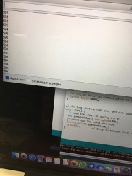

Index
Bottropper Werkstätte and knitting
Interdisciplinary Project Winter Semester 2018/2019
Rhine-Waal University of Applied Sciences FabLab Kamp-Lintfort
by Adriana Cabrera, Prof. Karsten Nebe, Prof. William Megill
Faculty Enviroment and Energy
We talked about how to approach the final project. These are the stops we should keep in mind:
Define Problem
Research
Specify requirements
Brainstorm, evaluate solution
Develop prototype
Test prototype, what worked? What didn't work?
Communicate work
Our ideas for titels:
third eye, big eye, sight, sighteye, AE (addedeye)
Presentation about the Bottropper Werstätte/Diakonie
people do "internships" for 3 years before really working there
Shelves' lightning at ALDI are built there for example
Qualifizierungen:
garten- und landschaftsbau
Retail (supermarket)
edv prüfungen
holz- und metallbearbeitung
hausmeisterserivce
tierpflege
And so on
Knitting
Small needles in a row pull down the yarn. In the machine you can adjust everything, for example if you need a pullover with only one arm or trousers with only one leg.
There are resting needles and working needles.
You need to position the needles and choose the amount of needles you want in order to get other patterns.
When you start knitting, you need to "close" the yarn in the beginning or first row so that it does not rip pr tear later on.
The needles need to be opened as you can see in this picture
Then you pull and position te yarn, hold the end and knit the first row. It is closed now and you can release the green object and let it hang losely.

Here you can see that a few rows have been knitted
With adding this plastic piece and adding a second yarn you can knit in different patterns and create images and so one.
We also created sensors by cutting some fabric that is conducting.
The resistor was 25.5
When putting pressure on the fabric you see the the resistor changes
here you can see the steps in Ardunio

You can see that the numbers change and pushing on the sensor